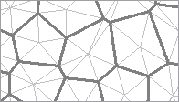

Abstract
The mathematics of area computation on the ellipsoidal planetary surface is straightforward; it is however rarely implemented in its rigorous form. Most spatial information systems dealing with two dimensional objects treat the area not as a simple derivative of the object definition geometry, but rather as an artifact of its representation in a particular planar representation. This approach fails when no single, canonical planar representation is either practical or desirable, or when the spatial extent of the object exceeds the useful coverage of a single planar projection.
The Hipparchus geopositioning model represents two dimensional terrestrial objects in the context of an irregular global grid consisting of spheroidal Voronoi polygons. This paper presents the strategy and outlines the implementation of area computation for such objects. It assumes that efficiency is as important as is the precision, and that the objects can be of any size, shape and topological complexity. The speed and accuracy of the computation is examined by applying it to a large, global object of high data volume and considerable topological complexity.
This paper presents a particular numerical solution to a rather straightforward and well-defined mathematical problem: given a two-dimensional object of an arbitrary complex topology on a surface of an ellipsoid of rotation, find its area. Several elements of the underlining mathematics are worth noting at the outset:
The total surface of an ellipsoid of rotation can be expressed as a closed (but transcendental) function of its semi-minor and semi-major axes.
The area of a pseudo-trapezoidal figure bounded by two meridians and two parallels leads to a single ellipsoidal integral over the latitude domain.
The area of a triangle - with geodesics as its sides - leads to a double ellipsoidal integral over the geodesic lengths.
Even the mathematically simpler - trapezoidal - decomposition results in an integral that requires a binomial series expansion. In addition, the substitution of the continuously changing width of latitude-bands for a figure bounded by a geodesic leads to an approximation, the magnitude of which depends on both the band height and the local azimuth of the geodesic. The decomposition into triangles results in a similar, but even more complicated numerical solution. In either case, the decomposition of topologically "deep" two dimensional objects into either pseudo-trapezoidal or triangular components can lead to rather complex implementation problems. A good overview of the ellipsoidal geometry and the algebra and calculus used to implement common geodetic computations can be found in either Jordan (1958) or Bomford (1975).
Figure 1: A two-dimensional object in a spheroidal Voronoi grid
If the two-dimensional ellipsoidal surface object is already represented in a form which provides a convenient basis for the geometrical decomposition, it will be advantageous to use such representation as a basis for the area computation. This is the case in the Hipparchus Geopositioning Model, where an object is represented in an irregular global grid of Voronoi polygons. (The full presentation of this model is outlined in a web-resident publication titled: Hipparchus Geopositioning Model: an Overview). It is an example of a "constructive index", where the object geometrical integrity remains intact, and the infrastructure required to access parts of the object that belong to one index block (data cell, tile... etc.) exists "in addition" to the data defining its geometry. Figure 1 depicts an object in a global Voronoi grid. We will - later on in this text - recapitulate those features of this type of object representation which influence directly the area computation. For now, we note only that there are some cells ("boundary cells") through which the object boundary "meanders" and some cells ("interior cells") which are completely encompassed by the object. The area of an object will be determined by summing up the area of all interior cells and adding to this the partial area - that portion covered by the object - of all of its boundary cells.
 We will first outline the method for determining the area of any Voronoi cell. This is done by subdividing the cell into triangles with neighbor edges as a base and cell center as the opposite vertex. The edges of these triangles are segments of great circles on a sphere related to the ellipsoid (on which both the object boundary and cell-center coordinates are defined by their geodetic coordinates) by conformal ellipsoid to sphere mapping. While these edges are not ellipsoidal geodesics, the maximum line displacement is both relatively small (2.5 meters for a line similar to the one discussed below in the context of UTM mapping) and the "gain" and "loss" tend to be of the same magnitude when all the edges along the cell boundary are considered. The area of these triangles is then computed by spherical productions, but using a constantly changing radius determined by the mean curvature of the ellipsoid surface in the cell center.
The method presented here shares two salient principles with the one devised by Tobler and Kimerling, as described in Kimerling (1984): the first is the use of local ellipsoidal radii in spherical triangle area productions and the second is the tracking of positive and negative area contributions based on the direction of the boundary segment. The latter parallels the procedural makeup of the planar polygon area computation and provides an effective way to keep the non-numerical programming complication within reason, while at the same time avoiding any restriction on the level of the topological complexity of the objects for which the area is calculated.
In geodetic computations, the expression for the mean radius of
the ellipsoid surface in a given point is commonly referred to as
Gauss' formula: r = sqrt(m*n)m and n are radii of the meridian
and prime vertical, respectively). The conventional computation of
the mean radius uses the ellipsoidal eccentricity term - an
unnecessary complication in computation on digital computers.
The preferred method uses tsq: a latitude
(phi) dependent square of the free term of the tangential
plane, defined directly as a function of the sine and cosine of the
point of tangency and the major and minor ellipsoid semi-axes
(a and b respectively), as follows:
s = sin(phi)
c = cos(phi)
tsq = a*a*c*c + b*b*s*s
r = (a*a*b)/tsq
This method of mean ellipsoid radius computation is especially
convenient for systems such as Hipparchus, which represent the
location of a point using the direction cosines of its ellipsoid
normal: the evaluations of s and c require
no expensive transcendental computations. Also, the tsq term finds a
repeated use in many different ellipsoid geometry propositions.
No a priori error term has been derived for this "finite element" ellipsoid-to-sphere approximation; the total area of all cells so computed can however be compared (and adjusted) to the total ellipsoid surface. (See below, under "Some Numerical Results", for details). Since we assume that a system will be required to produce the area of many different objects, represented in the context of the same global grid, an array of areas - one element for each cell - will be conveniently stored with the other data in the structures representing the Voronoi polygons.
Computing the area of a spherical triangle for which the lengths of all three sides (a, b and c) are given can be done using two different approaches: by applying Legendre's approximation, or by L'Huilere's theorem. The former states that the area of a spherical triangle will be getting closer to the area of a planar triangle with the same side lengths, as the ratio of the triangle perimeter divided by the spherical radius gets smaller. The latter is, on the other hand, a rigorous evaluation of the spherical triangle area in terms of the three sides. To compare the two:
P = sqrt(s*(s-a)*(s-b)*(s-c))
versus:
P = 4*atan(sqrt(tan(s/2)*tan((s-a)/2)*tan((s-b)/2)*tan((s-c)/2)))
(where s is the common shorthand notation for the
half-sum of all three sides)
Implementations which impose a low maximum cell radius limit might take advantage of a considerably faster Legendre's approximation. The implementation used to derive the numerical examples given below is, however, based on the second (L'Huilere's) expression, applied to a "local" sphere with the radius equal to the mean ellipsoid radius at the cell center.
The determination of the area of an object in a boundary cell requires no additional mathematics. If an object is topologically well-defined, its area inside a boundary cell will consist of a finite number of distinct "faces", each bounded by a closed ring. The ring may consist of either the segments that all belong to the object boundary, or, in the general case, a combination of object boundary and cell edge segments. In a procedure directly paralleling the usual implementation of planar polygon area computation, we can traverse the ring, and accumulate triangular areas subtended from each segment and the coordinate origin - adding or subtracting, depending on the radial direction of the boundary segment respective to the coordinate origin.
Figure 2: Geometry of a boundary cell
We will next identify some area computation pertinent features of the object geometry definition in an example of a boundary cell, as depicted in Figure 2. (It is an enlarged part of the object shown in Figure 1). The topological decomposition of the object presented in the following is essentially the same as it would be if the object was a planar one - thus additional details, definitions and code segments can be found in many sources describing planar computational geometry - for instance Bowyer (1983).
The fundamental geometrical element is a "fragment": an ordered array of vertices forming the object boundary, in either a closed ring, or starting and ending on the cell boundary. There are four boundary fragments in the example: a, b, c and d; two of them are closed rings (a and b), and two are connecting cell boundary crossing points (fragment c, connecting crossing points 1 and 2; and fragment d, connecting points 3 and 4). For each fragment, we note that the start point is the point where the object boundary "enters" the cell, and the fragment end point is the point where the boundary "exits" the cell.
Fragments are directed in the mathematically positive sense, such that the object interior is always on the left-hand side of the boundary line. This ensures that the "voids" will produce a negative contribution to the total area, regardless of how "deeply nested" the topology of the object is.
One or more fragments form the boundary of a "face" - a single continuous, connected area. In the example, there are three faces: A, B and C. Faces A and B are formed by single ring fragments a and b. Face C is formed by fragments c and d. In addition to the two fragments, the boundary of face C also requires two cell-edge line segments: first one from the end point of the fragment d, to the cell vertex s, to the start point of the fragment c and the second, from the end point of fragment c, through the cell vertices u, p, q and r, to the start point of the fragment d.
A canonical representation of the Hipparchus system two-dimensional objects identifies only the distinct boundary fragments, and not the faces they form. No spatial algebra proposition (e.g., "polygon overlay") requires this knowledge, and all such propositions would thus be burdened with the additional code if required to keep track of the fragment/face relationship. The area computation algorithm must therefore "construct" the faces as and when required. This information is used implicitly, in the ring traverse order, and is not stored permanently. This "construction" is trivial for faces which are formed by a single closed fragment (A, B); and somewhat involved for the faces (C) that are composed of both object and cell boundary.
The computation of an object area in a boundary cell consists of two phases. The first one is a simple traverse of all fragments. Closed fragments present no special problem: their area contribution is accumulated as they are encountered. For open fragments (i.e., those that start and end on the cell boundary) both boundary crossing points are stored in a table, which lists the point type (start or end), fragment identification (in form of a pointer), cell neighbor index of the crossing point, and the distance from the closest "upstream" cell vertex. If the cell across the p-q edge is the first (index 0) neighbor in the (circular) list of cell neighbor cells, then for fragment c two entries are stored in the table: one for entry point 1, with neighbor index 3 and s-1 distance; and another for exit point 2, with neighbor index 4 and t-2 distance. Similar entries would be made for boundary points 3 and 4, when fragment d is processed. In addition, a list of fragments is doubly-linked with the table elements. This ensures that at the end of the traverse of an open fragment, its end-point can be retrieved from the table.
The boundary crossing point table is then sorted, with the neighbor index as the primary and upstream vertex distance as the secondary ordering element. The table in the example would thus be reordered as 3, 4, 1, 2. This table is considered to be circular, just like the ordered list of cell neighbors.
In the second phase we traverse the faces by starting at the first previously unvisited cell entry (fragment start) point retrieved from the sorted table. The table element is marked as "visited", and the fragment is followed - accumulating the area at each fragment vertex - until the fragment end (cell exit) point is encountered. The table is then searched for the next (in the circular sorted table order) fragment start point. When one is found, the cell vertices (if any) between the two points are traversed and their area contribution is accumulated. If the found entry point has not been visited before, we mark it and traverse its fragment, if it was visited before we have completely encircled a face. Another "unvisited" entry point from the table (if any are left) starts the same process for the next face; if none are left, the boundary cell area computation is completed.
The numerical testing and verification of the area computation presented here differs markedly from that used in Kimerling (1984). There, the comparison is made between the area of a rhomboid computed from its vertex coordinates in UTM projection and the area computed on the ellipsoid using geodetic coordinates of the four equivalent vertices. However, the straight line in UTM projection with a length of almost 250 km (for the largest of the verification figures) is in the general case different from the projection of the geodesic - in this case, the maximum displacement between the two is considerable, and varies significantly between the easterly (11.3 meters) and westerly (28.9 meters) edges. If the geodesic edges connecting the vertices on the ellipsoid are projected back to the UTM plane (as a sufficiently dense array of vertices), and the area is recomputed, it changes by approximately 1 in 10000 - quite a bit above the precision level of the ellipsoidal area computation claimed by both methods.
Numerical and timing tests performed and presented here use a data object derived from the world coastlines coverage of the Digital Chart of the World (see References, DCW, 1992). It provides multiple "layers" of general-purpose geographical data, commensurate in the precision and density with that of a 1:1 million paper map, using angular geographic coordinates in 5 degree "tiles" on the WGS 84 ellipsoid.
Before the DCW data could be used, however, numerous topological inconsistencies - occurring primarily on the DCW tile edges - had to be detected and removed. The resulting data set consists of 1.3 million vertices, in 27.3 thousand boundary rings - the largest of them encompassing all of the landmass of Europe, Asia and Africa. As a Hipparchus canonical 2-dimensional data set, the object size is slightly over 12 MB. (Raw coordinate data - at 8 bytes per point - takes approximately 11 MB of that).
The average coastline boundary segment is slightly under one kilometer, and less than 1.5% of the segments exceed 3.5 kilometers in length. It is thus safe to assume that the boundary segments - computationally represented by segments of great circles on a conformal sphere - are coincident with the projection of the ellipsoid geodesic connecting the two boundary vertices. (For objects with long boundary segments Hipparchus vector algebra offers a fast yet highly precise approximation of the geodesic line computation as a mid-point between two points: one on the direct and the other on the inverse vertical intersection. (Details of these and other vector-algebra based geodetic techniques can be found in an online Hipparchus Tutorial).
By simply inverting the order of boundary vertices in each ring, we can produce two conjugate objects: one representing the continental landmasses and islands, and the other representing the global Ocean. Both objects are represented in a global Voronoi grid of 2432 cells. The area of both objects has been calculated, with an obvious expectation that their perimeters (a natural by-product of the computation) will be the same, and that the sum of their areas will be equal to the total planetary surface.
Figure 3: Seven Seas - A Geometry Object
The area computation program initialization consists of the instantiation of the Voronoi grid as a memory-resident object and of the steps necessary to establish the memory-mapping access to the files containing the two objects. The area computation is packaged as a Hipparchus Library function named h7_RsetAreaPerimeter(); its parameters are four pointers to given data: to the Voronoi grid descriptor, some workspace, ellipsoid geometry parameters, and header data of the object for which the area is required; plus two pointers to returned values: the area and the perimeter.
The results presented here have been obtained using the code compiled with the GNU C compiler V.2.95.2, carried out on a 400 MHz Pentium II under Linux kernel 2.2.14. (Performance under NT was only marginally slower).
Ellipsoid: WGS 84, a=6378137.0e0, b=6356752.3141e0
The 2432 element cell-array area initialization took 0.19 seconds and produced the following values (square meters):
Ellipsoid area: 510065621716336.1 Total area of all cells: 510065575723515.5 Difference: 45992820.6 Relative difference (one in): 11090113.0
Area computation for both objects took 3.94 seconds (each), and produced the following values (square meters, meters):
Landmass area: 150998900960532.0, perimeter: 1249923047.850 Oceans area: 359070890924373.1, perimeter: 1249923047.850 Ellipsoid area: 510065621716336.1 Landmass + Oceans 510069791884905.1 Difference: 4170168569.0 Relative difference (one in): 122313.0
The following conclusions seem to be justified:
Computation of the ellipsoid cell areas using local mean curvature at the cell center produced the results which are within one in 11 million of the total ellipsoid surface area. For the grid and objects as examined in the example, this is two orders of magnitude better than the results of the object area computation, and thus adequate.
Computation of two very large planetary complement objects produces results which are within one in 122 thousand of the total ellipsoid surface area. The obtained level of accuracy is a result of a combination of factors; the major one probably the inevitable rounding error in a very large number of (over 1.3 million) of relatively narrow triangles. The obtained accuracy compares favorably with that in many operational systems which compute the areas in the plane - at the outset a significant departure from the true object geometry.
The very short time needed to carry out the area computations of large objects makes it practical to compute it only as and when this information is required. This facilitates the system design in which the area of a global object of any size and/or shape is not treated as an independent attribute, but rather as only one in a repertoire of measures that can be derived from its canonical geometry definition.